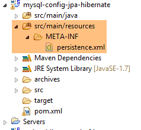
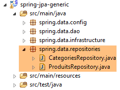
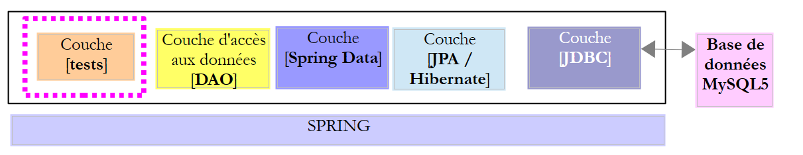
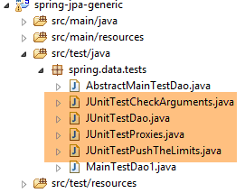

6. Spring Data JPA Hibernate
6.1. Introduction
Vamos retomar o banco de dados [dbproduitscategories] gerenciado pelo projeto [spring-jdbc-04] e implementar as duas interfaces [IDao<Categorie>, IDao<Produit>] definidas nesse projeto. Isso nos permitirá várias coisas:
- comparar os códigos de implementação;
- utilizar a mesma camada de testes;
- comparar o desempenho das duas implementações;
 |
- a camada [JDBC] é implementada pelo projeto [mysql-config-jdbc], analisado no parágrafo 3.3;
Passamos agora às demais camadas.
6.2. Configuração do ambiente de trabalho
Com o STS, importe o projeto [mysl-config-jpa-hibernate] [1], que se encontra na pasta [<exemples>/spring-database-config/mysql/eclipse] [2]:
 |
Este projeto configura a camada [Spring JPA Hibernate] do projeto. Cada implementação JPA possui seu próprio projeto de configuração.
Em seguida, importe o projeto [spring-jpa-generic] [1], localizado na pasta [<exemples>/spring-database-generic/spring-jpa] [2]:
 |
Feito isso, reinicialize o ambiente Maven (Alt-F5) de todos os projetos presentes em [Package Explorer]:
 |
Em seguida, para verificar o ambiente de trabalho, execute a configuração de execução denominada [spring-jpa-generic-JUnitTestDao-hibernate]:
 |
Essa configuração executa o teste [JUnitTestDao]. Esse teste deve ser bem-sucedido:
 |
6.3. O projeto de configuração da camada JPA
 |
Este projeto tem como função configurar a camada JPA da arquitetura abaixo:
 |
6.3.1. Configuração do Maven
O projeto é um projeto Maven e está configurado pelo seguinte arquivo [pom.xml]:
<project xsi:schemaLocation="http://maven.apache.org/POM/4.0.0 http://maven.apache.org/xsd/maven-4.0.0.xsd"
xmlns="http://maven.apache.org/POM/4.0.0" xmlns:xsi="http://www.w3.org/2001/XMLSchema-instance">
<modelVersion>4.0.0</modelVersion>
<groupId>dvp.spring.database</groupId>
<artifactId>generic-config-jpa</artifactId>
<version>0.0.1-SNAPSHOT</version>
<name>configuration mysql openjpa</name>
<parent>
<groupId>org.springframework.boot</groupId>
<artifactId>spring-boot-starter-parent</artifactId>
<version>1.2.3.RELEASE</version>
</parent>
<dependencies>
<!-- dependências variáveis ********************************************** -->
<!-- JPA provedor -->
<dependency>
<groupId>org.hibernate</groupId>
<artifactId>hibernate-entitymanager</artifactId>
</dependency>
<!-- dependências constantes ********************************************** -->
<!-- Spring Data -->
<dependency>
<groupId>org.springframework.data</groupId>
<artifactId>spring-data-jpa</artifactId>
</dependency>
<!-- Spring Context -->
<!-- configuração herdada JDBC -->
<dependency>
<groupId>dvp.spring.database</groupId>
<artifactId>generic-config-jdbc</artifactId>
<version>0.0.1-SNAPSHOT</version>
<exclusions>
<exclusion>
<groupId>org.springframework.boot</groupId>
<artifactId>spring-boot-starter-jdbc</artifactId>
</exclusion>
</exclusions>
</dependency>
</dependencies>
<properties>
<project.build.sourceEncoding>UTF-8</project.build.sourceEncoding>
<java.version>1.7</java.version>
</properties>
<build>
<plugins>
<plugin>
<groupId>org.apache.maven.plugins</groupId>
<artifactId>maven-surefire-plugin</artifactId>
<version>2.18.1</version>
</plugin>
</plugins>
</build>
</project>
- linhas 5-7: o artefato Maven gerado por este projeto. Os projetos de configuração das outras implementações JPA (Eclipselink e OpenJpa) utilizarão esse mesmo artefato. Isso significa que apenas um desses projetos pode estar ativo a qualquer momento. Portanto, deve-se evitar ter todos eles presentes no [Package Explorer]. Basta apenas um;
- linhas 10-14: o projeto Maven pai, que define a versão da maioria das dependências necessárias ao projeto;
- linhas 19-22: a biblioteca Hibernate;
- linhas 25-28: a biblioteca Spring Data;
- linhas 32-34: o projeto de configuração da camada JPA baseia-se no projeto de configuração da camada JDBC, que define, entre outras coisas, o driver JDBC do SGBD utilizado e as coordenadas do banco de dados a ser usado;
- linhas 35-39: o projeto de configuração da camada JDBC inclui a biblioteca [Spring JDBC], que aqui é substituída pela biblioteca [Spring Data JPA]. Portanto, recomenda-se não incluí-la nas dependências do projeto. Se ela permanecer, isso não causará erros;
No final, as dependências do projeto são as seguintes:
 |
6.3.2. Configuração do Spring
 |
A classe [ConfigJpa] configura o projeto Spring:
package generic.jpa.config;
import javax.persistence.EntityManagerFactory;
import generic.jdbc.config.ConfigJdbc;
import org.apache.tomcat.jdbc.pool.DataSource;
import org.springframework.context.annotation.Bean;
import org.springframework.context.annotation.Configuration;
import org.springframework.context.annotation.Import;
import org.springframework.orm.jpa.JpaTransactionManager;
import org.springframework.orm.jpa.JpaVendorAdapter;
import org.springframework.orm.jpa.LocalContainerEntityManagerFactoryBean;
import org.springframework.orm.jpa.vendor.Database;
import org.springframework.orm.jpa.vendor.HibernateJpaVendorAdapter;
import org.springframework.transaction.PlatformTransactionManager;
@Configuration
@Import({ ConfigJdbc.class })
public class ConfigJpa {
// o provedor JPA
@Bean
public JpaVendorAdapter jpaVendorAdapter() {
HibernateJpaVendorAdapter hibernateJpaVendorAdapter = new HibernateJpaVendorAdapter();
hibernateJpaVendorAdapter.setShowSql(false);
hibernateJpaVendorAdapter.setDatabase(Database.MYSQL);
hibernateJpaVendorAdapter.setGenerateDdl(true);
return hibernateJpaVendorAdapter;
}
// pacotes de entidades JPA
public final static String[] ENTITIES_PACKAGES = { "generic.jpa.entities.dbproduitscategories" };
// fonte de dados
@Bean
public DataSource dataSource() {
// fonte de dados TomcatJdbc
DataSource dataSource = new DataSource();
// configuração de acesso JDBC
dataSource.setDriverClassName(ConfigJdbc.DRIVER_CLASSNAME);
dataSource.setUsername(ConfigJdbc.USER_DBPRODUITSCATEGORIES);
dataSource.setPassword(ConfigJdbc.PASSWD_DBPRODUITSCATEGORIES);
dataSource.setUrl(ConfigJdbc.URL_DBPRODUITSCATEGORIES);
// conexões abertas inicialmente
dataSource.setInitialSize(5);
// resultado
return dataSource;
}
// EntityManagerFactory
@Bean
public EntityManagerFactory entityManagerFactory(JpaVendorAdapter jpaVendorAdapter, DataSource dataSource) {
LocalContainerEntityManagerFactoryBean factory = new LocalContainerEntityManagerFactoryBean();
factory.setJpaVendorAdapter(jpaVendorAdapter);
factory.setPackagesToScan(ENTITIES_PACKAGES);
factory.setDataSource(dataSource);
factory.afterPropertiesSet();
return factory.getObject();
}
// Gerenciador de transações
@Bean
public PlatformTransactionManager transactionManager(EntityManagerFactory entityManagerFactory) {
JpaTransactionManager txManager = new JpaTransactionManager();
txManager.setEntityManagerFactory(entityManagerFactory);
return txManager;
}
}
- linha 18: a classe é uma classe de configuração do Spring;
- linha 19: ela importa os beans definidos pela classe de configuração [ConfigJdbc], que foi usada para configurar o projeto Spring [mysql-config-jdbc]. Trata-se dos filtros jSON;
- linhas 23-30: definem a implementação JPA utilizada, neste caso a implementação do Hibernate (linha 25);
- linha 26: é possível optar por exibir ou não as operações SQL executadas pela implementação do Hibernate;
- linha 27: indica-se ao Hibernate o SGBD conectado. Essa configuração é importante. Ela permite que o Hibernate utilize o dialeto SQL do SGBD MySQL, incluindo sua parte proprietária. Além disso, isso fornece informações sobre os tipos SQL e os objetos de SGBD que ele poderá utilizar. É essa capacidade da implementação JPA de se adaptar a um SGBD específico que lhe confere grande portabilidade entre SGBD;
- linha 28: O Hibernate pode ou não gerar as tabelas do banco de dados de destino a partir das entidades JPA que encontrar. Essa geração só ocorre se as tabelas estiverem ausentes. Se elas já estiverem presentes, nada é feito. Utilizaremos essa capacidade de gerar tabelas quando apresentarmos como foram gerados os scripts SQL para a geração dos diversos bancos de dados utilizados neste documento;
- linha 33: o pacote no qual se encontram as entidades JPA do banco de dados [dbproduitscategories];
- linhas 36-49: a fonte de dados [tomcat-jdbc] vinculada ao banco de dados [dbproduitscategories];
- linhas 52-60: o bean denominado [entityManagerFactory] (deve ter esse nome) é o bean que criará o objeto [EntityManager], responsável por gerenciar o contexto de persistência JPA. Todas as operações JPA passam por ele. O uso de [Spring Data JPA] faz com que nunca venhamos a utilizar esse objeto diretamente. No entanto, precisamos configurá-lo. Ele precisa saber o seguinte:
- a implementação JPA utilizada (linha 55);
- a fonte de dados utilizada (linha 57);
- as entidades JPA dessa fonte (linha 56);
- linha 58: inicializa o EntityManager com essas informações;
- linha 59: retorna o singleton [entityManagerFactory];
- linhas 63-68: definem o gerenciador de transações. Ele deve se chamar [transactionManager];
- linha 65: é criado um gerenciador de transações JPA;
- linha 66: ele é vinculado à fonte de dados da linha 37 por meio do bean [entityManagerFactory] (linhas 53 e 57);
Apenas o bean das linhas 23 a 30 depende da implementação JPA utilizada. Os demais beans, por sua vez, dependem dele.
6.3.3. As entidades da camada [JPA]
 |
 |
O banco de dados de destino é o [dbproduitscategories], com suas duas tabelas [CATEGORIES] e [PRODUITS]. Vimos que ela também possui outras três tabelas, [USERS, ROLES, USERS_ROLES], que serão utilizadas para proteger o serviço web a ser implantado na web. Por enquanto, ignoraremos essas tabelas. Vale lembrar a estrutura das tabelas [CATEGORIES] e [PRODUITS]:
A tabela [PRODUITS] é a seguinte:
 |
- [ID]: a chave primária autoincrementada da tabela [2];
- [NOM]: o nome exclusivo do produto [4];
- [PRIX]: o preço do produto;
- [DESCRIPTION]: a descrição do produto;
- [VERSIONING] é o número de versão do produto. Sua versão inicial é 1 [3]. Sempre que o produto for modificado, seu número de versão será incrementado pelo código que opera a tabela;
- [CATEGORIE_ID]: a chave estrangeira na tabela [CATEGORIES] para indicar a categoria à qual o produto pertence;
 |
- em [1-3], a chave estrangeira [CATEGORIE_ID] da tabela [PRODUITS]. Ela tem como alvo a coluna [ID] da tabela [CATEGORIES] [4-5];
- quando uma categoria é excluída, todos os produtos a ela vinculados também são excluídos ([6]). É importante observar esse ponto, pois ele é utilizado na construção da camada [DAO], que utiliza a base [dbproduitscategories];
A tabela [CATEGORIES] de categorias é a seguinte:
 |
- [ID]: chave primária autoincrementada;
- [VERSIONING]: número da versão da categoria;
- [NOM]: nome exclusivo da categoria;
Descreveremos agora as entidades JPA, [Produit] e [Categorie], que são imagens das tabelas [PRODUITS] e [CATEGORIES].
|
6.3.3.1. A interface [AbstractCoreEntity]
A interface [AbstractCoreEntity] é implementada pelas entidades JPA, [Categorie] e [Produit]:
package generic.jpa.entities.dbproduitscategories;
public interface AbstractCoreEntity {
// getters e setters dos campos [id], [version], [entityType]
public Long getId();
public void setId(Long id);
public Long getVersion();
public void setVersion(Long version);
public enum EntityType {
PROXY, POJO
}
public EntityType getEntityType();
public void setEntityType(EntityType entityType);
}
Essa interface, implementada pelas duas entidades JPA, serve simplesmente para listar os métodos para ler/gravar os campos [id], [version] e [entityType] dessas entidades. A função do campo [entityType] será explicada posteriormente;
6.3.3.2. A entidade JPA [Produit]
A classe [Produit] é a entidade JPA associada a uma linha da tabela [PRODUITS]:
 |
package generic.jpa.entities.dbproduitscategories;
import generic.jdbc.config.ConfigJdbc;
import generic.jpa.infrastructure.ProxyException;
import javax.persistence.Column;
import javax.persistence.Entity;
import javax.persistence.FetchType;
import javax.persistence.GeneratedValue;
import javax.persistence.GenerationType;
import javax.persistence.Id;
import javax.persistence.JoinColumn;
import javax.persistence.ManyToOne;
import javax.persistence.Table;
import javax.persistence.Transient;
import javax.persistence.Version;
import com.fasterxml.jackson.annotation.JsonFilter;
import com.fasterxml.jackson.annotation.JsonIgnore;
@Entity
@Table(name = ConfigJdbc.TAB_PRODUITS)
@JsonFilter("jsonFilterProduit")
public class Produit implements AbstractCoreEntity {
// propriedades
@Id
@GeneratedValue(strategy = GenerationType.IDENTITY)
@Column(name = ConfigJdbc.TAB_JPA_ID)
protected Long id;
@Version
@Column(name = ConfigJdbc.TAB_JPA_VERSIONING)
protected Long version;
@Transient
protected EntityType entityType = EntityType.POJO;
@Transient
@JsonIgnore
protected String simpleClassName = getClass().getSimpleName();
// propriedades
@Column(name = ConfigJdbc.TAB_PRODUITS_NOM, unique = true, length = 30, nullable = false)
private String nom;
@Column(name = ConfigJdbc.TAB_PRODUITS_CATEGORIE_ID, insertable = false, updatable = false, nullable = false)
private Long idCategorie;
@Column(name = ConfigJdbc.TAB_PRODUITS_PRIX, nullable = false)
private double prix;
@Column(name = ConfigJdbc.TAB_PRODUITS_DESCRIPTION, length = 100)
private String description;
// categoria
@ManyToOne(fetch = FetchType.LAZY)
@JoinColumn(name = ConfigJdbc.TAB_PRODUITS_CATEGORIE_ID)
private Categorie categorie;
// fabricantes
public Produit() {
}
public Produit(Long id, Long version, String nom, Long idCategorie, double prix, String description,
Categorie categorie) {
this.id = id;
this.version = version;
this.nom = nom;
this.idCategorie = idCategorie;
this.prix = prix;
this.description = description;
this.categorie = categorie;
}
// assinatura
public String toString() {
return String.format("[id=%s, version=%s, nom=%s, prix=10.2f, desc=%s, idCategorie=%s]", id, version, nom, prix,
description, idCategorie);
}
// ------------------------------------------------------------
// redefinição de [equals] e [hashcode]
@Override
public int hashCode() {
Long id = getId();
return (id != null ? id.hashCode() : 0);
}
@Override
public boolean equals(Object entity) {
if (!(entity instanceof AbstractCoreEntity)) {
return false;
}
String class1 = this.getClass().getName();
String class2 = entity.getClass().getName();
if (!class2.equals(class1)) {
return false;
}
AbstractCoreEntity other = (AbstractCoreEntity) entity;
Long id = getId();
Long otherId = other.getId();
return id != null && otherId != null && id.equals(otherId);
}
// getters e setters
...
public void setCategorie(Categorie categorie) {
// tipo da entidade
if (entityType == EntityType.PROXY) {
throw new ProxyException(1005, new RuntimeException(
"On ne peut changer la catégorie d'un produit de type [PROXY]"), simpleClassName);
}
this.categorie = categorie;
}
}
- linha 21: a anotação [@Entity] torna a classe [Produit] uma entidade gerenciada pela camada [JPA]. Também é possível escrever [@Entity(name="MonProduit")], o que atribui o nome [MonProduit] à entidade. Na ausência dessa informação, o nome da entidade é o nome da classe, neste caso, [Produit]. Essa nomenclatura torna-se necessária quando, entre as entidades, há duas classes de pacotes diferentes que possuem o mesmo nome;
- linha 22: a anotação [@Table(name = "PRODUITS")] indica que a classe [Produit] é a imagem-objeto de uma linha da tabela [PRODUITS] do banco de dados;
- linha 23: o nome do filtro jSON a ser aplicado à entidade. Veremos que a propriedade [categorie] da linha 58 nem sempre está disponível. Nesse caso, é preciso excluí-la da representação jSON do objeto. Para isso, precisamos de um filtro. Assim, será em um filtro chamado [jsonFilterCategorie] que indicaremos se queremos ou não a propriedade [categorie];
- linha 26: a anotação [@Id] define o campo anotado como o campo associado à chave primária da tabela da linha 19;
- linha 27: a anotação [@GeneratedValue(strategy = GenerationType.IDENTITY)] define o modo de geração automática da chave primária na tabela [PRODUITS]. É o atributo [strategy] que o define. Existem diferentes modos:

A estratégia [IDENTITY] não está disponível para todos os SGBD. Entre os seis SGBD testados, ela estava disponível para os SGBD e [MySQL 5, PostgreSQL 9.4, SQL Server 2014, DB2 Express-C10.5]. Para os outros dois [Oracle Express 11g Release 2, Firebird 2.5.4], foi necessário utilizar a estratégia [SEQUENCE]. Para a portabilidade entre implementações JPA, não se deve adotar a estratégia [AUTO], que deixa a escolha da estratégia de geração da chave primária a critério da implementação JPA. Assim, com MySQL 5 e a estratégia [AUTO]:
- o Hibernate escolhe a estratégia [IDENTITY] com o modo [AUTO_INCREMENT] para a chave primária;
- EclipseLink escolhe a estratégia [TABLE], que cria uma tabela chamada, por padrão, [SEQUENCE], à qual é necessário consultar para obter as chaves primárias.
No final das contas, a estrutura do banco de dados gerenciada por essas duas implementações JPA não é a mesma. Se ela tiver sido gerada pelo Hibernate, não será utilizável pelo EclipseLink e vice-versa.
- linha 28: a anotação [@Column(name="ID"] define o nome da coluna da tabela [PRODUITS] a ser associada ao campo [id];
- linha 29: utiliza-se o tipo [Long] em vez de [long] para a chave primária. De fato, as chaves primárias [null] têm um significado específico para JPA. Portanto, é preferível utilizar aqui um tipo de objeto em vez de um tipo simples;
- linha 31: a anotação [@Version] indica que o campo [version] está associado a uma coluna de controle de versão. A implementação JPA incrementará esse número de versão sempre que a entidade for modificada. Esse número serve para impedir a atualização simultânea da entidade por dois usuários diferentes: dois usuários, U1 e U2, leem a entidade E com um número de versão igual a V1. U1 modifica E e grava essa modificação no banco de dados: o número de versão passa então para V1+1. U2, por sua vez, modifica E e grava essa modificação no banco de dados: ele receberá uma exceção, pois possui uma versão (V1) diferente daquela no banco de dados (V1+1);
- linha 36: o tipo da entidade. Teremos dois: POJO e PROXY. Por padrão, a instância gerada será um POJO (Plain Old Java Object). Em alguns casos, as instâncias [Produit] recuperadas do banco de dados serão do tipo [PROXY]. Isso ocorrerá quando a propriedade [Categorie categorie] da linha 58 não tiver sido inicializada com uma categoria devido ao atributo [fetch = FetchType.LAZY] da linha 56. Nesse caso, as implementações JPA que serão testadas diferem:
- [Hibernate, OpenJPA]: acessar a categoria de um produto do tipo [PROXY] gera uma exceção. O Hibernate utiliza o termo “proxy” para designar uma instância JPA obtida no modo [LAZY]. É por isso que utilizei esse termo para designar esse tipo de entidade;
- [EclipseLink]: acessar a categoria de um produto do tipo [PROXY] faz com que essa categoria seja pesquisada no banco de dados e não ocorre nenhuma exceção;
Como eu queria ter uma camada de testes independente da implementação JPA utilizada, desejei saber o tipo de cada entidade: POJO ou PROXY. Por isso, adicionei o campo [entityType] às entidades JPA;
- linha 35: a anotação [@Transient] indica que a implementação JPA deve ignorar esse campo. De fato, ele não existe nas tabelas do SGBD;
- linha 40: a classe [Produit] lança uma exceção do tipo [ProxyException], que requer o nome da classe;
- linha 38: assim como anteriormente, indica-se que a implementação JPA deve ignorar esse campo;
- linha 39: a anotação [@JsonIgnore] indica que o serializador/desserializador jSON de uma instância [Produit] deve ignorar esse campo;
- linha 43: a anotação [@Column] associa o campo [nom] à coluna [NOM] da tabela [PRODUITS]. Quando o campo tem o mesmo nome que a coluna associada (sem distinção entre maiúsculas e minúsculas), a anotação [@Column] pode ser omitida. Esse seria o caso aqui. Os atributos [unique = true, length = 30, nullable = false] são utilizados apenas quando a implementação JPA precisa gerar a tabela [CATEGORIES] a partir da entidade [Produit]. Eles serão traduzidos pelos atributos SQL e [UNIQUE, VARCHAR(30), NOT NULL], que fazem com que a coluna [NOM] tenha no máximo 30 caracteres, seja única na tabela e não possa ter o valor NULL;
- linhas 46-47: o campo [idCategorie] está vinculado à coluna [CATEGORIE_ID]. Voltaremos a seus atributos um pouco mais adiante;
- linhas 49-50: o campo [prix] está associado à coluna [PRIX];
- linhas 52-53: o campo [description] está associado à coluna [DESCRIPTION];
- linhas 56-58: a categoria do produto;
- linha 56: a anotação [@ManyToOne] indica que a coluna da anotação da linha 57, [@JoinColumn(name = "CATEGORIE_ID")], é uma chave estrangeira da tabela [PRODUITS] daentidade [Produit] na tabela [CATEGORIES] associada à entidade da linha 58. Essa anotação deve referir-se a uma entidade JPA. Portanto, a classe da linha 58 deve ser uma entidade JPA;
- linha 56: a anotação [fetch = FetchType.LAZY] determina que, ao recuperar um produto da tabela [PRODUITS], sua categoria (linha 58) não seja recuperada imediatamente (carregamento diferido). Ela é, então, obtida na primeira chamada ao método [getCategorie]. Para isso, durante a execução, a camada JPA complementa o método inicial [getCategorie] (que se limita a retornar o campo categorie) com uma chamada ao SGBD para buscar a categoria — uma técnica chamada “proxying”. As implementações JPA diferem na implementação dessa característica, conforme mencionado anteriormente. Esse atributo não é obrigatório. A implementação JPA utilizada tem o direito de ignorá-lo. É porque a propriedade [categorie] pode estar presente ou não que introduzimos o filtro jSON na linha 23. A coluna de junção [CATEGORIE_ID] da tabela [PRODUITS] é atualizada automaticamente durante a inserção ou atualização do produto. Ela recebe o valor de [categorie.getId()], sendo que [categorie] é o campo da linha 58. A especificação JPA determina que essa coluna de junção não possa ser atualizada por nenhum outro meio. Além disso, ela impõe os atributos [insertable = false, updatable = false] da linha 46, que fazem com que a coluna [CATEGORIE_ID] (ou seja, a coluna de junção) associada ao campo [idCategorie] não possa ser modificada pelo campo [idCategorie]. Apenas será possível a transferência da coluna [CATEGORIE_ID] para o campo [idCategorie];
- linhas 91-104: a igualdade entre as entidades [Produit] é definida como a igualdade entre suas chaves primárias [id];
- linhas 108-115: para tornar nossa camada de testes portátil, vamos tratar de maneira uniforme as entidades [PROXY] das três implementações JPA e [Hibernate, EclipseLink, OpenJpa]. Para um tipo [Produit] do tipo [PROXY], proibiremos a alteração do valor do campo [categorie]. A classe [ProxyException] é a seguinte:
 |
package generic.jpa.infrastructure;
import generic.jdbc.infrastructure.UncheckedException;
public class ProxyException extends UncheckedException {
private static final long serialVersionUID = 7278276670314994574L;
public ProxyException() {
}
public ProxyException(int code, Throwable e, String simpleClassName) {
super(code, e, simpleClassName);
}
}
Para concluir a análise desta entidade, é importante observar que as anotações e seus atributos são utilizados em dois casos bem distintos:
- para criar as tabelas do banco de dados;
- para utilizá-las. Nesse caso, a implementação JPA espera encontrar as tabelas exatamente como ela mesma as teria gerado. Portanto, não é possível associar à entidade [Produit] anterior qualquer tabela [PRODUITS]. É necessário que esta tenha, no mínimo (pode ter outras), as características da tabela [PRODUITS] que ela mesma teria gerado. Ao trabalhar com a JPA, o ideal é partir de uma base vazia, na qual se permite que a JPA gere as tabelas. Abordaremos essa geração um pouco mais adiante. O script SQL fornecido para o SGBD e o MySQL foi gerado a partir das tabelas geradas pelo JPA.
Todos os atributos da entidade [Produit] são utilizados para a geração da tabela [PRODUITS]. Quando isso é feito, atributos de geração como [unique = true, length = 30, nullable = false] não são mais utilizados durante a exploração das tabelas.
6.3.3.3. A entidade JPA [Categorie]
A classe [Categorie] é uma entidade JPA associada a uma linha da tabela [CATEGORIES]:
 |
Seu código é o seguinte:
package generic.jpa.entities.dbproduitscategories;
import generic.jdbc.config.ConfigJdbc;
import generic.jpa.infrastructure.ProxyException;
import java.util.ArrayList;
import java.util.List;
import javax.persistence.CascadeType;
import javax.persistence.Column;
import javax.persistence.Entity;
import javax.persistence.FetchType;
import javax.persistence.GeneratedValue;
import javax.persistence.GenerationType;
import javax.persistence.Id;
import javax.persistence.OneToMany;
import javax.persistence.Table;
import javax.persistence.Transient;
import javax.persistence.Version;
import com.fasterxml.jackson.annotation.JsonFilter;
import com.fasterxml.jackson.annotation.JsonIgnore;
@Entity
@Table(name = ConfigJdbc.TAB_CATEGORIES)
@JsonFilter("jsonFilterCategorie")
public class Categorie implements AbstractCoreEntity {
@Id
@GeneratedValue(strategy = GenerationType.IDENTITY)
@Column(name = ConfigJdbc.TAB_JPA_ID)
protected Long id;
@Version
@Column(name = ConfigJdbc.TAB_JPA_VERSIONING)
protected Long version;
@Transient
protected EntityType entityType = EntityType.POJO;
@Transient
@JsonIgnore
protected String simpleClassName = getClass().getSimpleName();
// propriedades
@Column(name = ConfigJdbc.TAB_CATEGORIES_NOM, unique = true, length = 30, nullable = false)
private String nom;
// produtos associados
@OneToMany(fetch = FetchType.LAZY, mappedBy = "categorie", cascade = { CascadeType.ALL })
private List<Produit> produits;
// construtores
public Categorie() {
}
public Categorie(Long id, Long version, String nom, List<Produit> produits) {
this.id = id;
this.version = version;
this.nom = nom;
this.produits = produits;
}
// assinatura
public String toString() {
return String.format("[id=%s, version=%s, nom=%s]", id, version, nom);
}
// métodos
public void addProduit(Produit produit) {
// tipo da entidade
if (entityType == EntityType.PROXY) {
throw new ProxyException(1004, new RuntimeException(
"On ne peut ajouter de produits à une catégorie de type [PROXY]"), simpleClassName);
}
// adição de um produto
if (produits == null) {
produits = new ArrayList<Produit>();
}
if (produit != null) {
// adiciona-se o produto
produits.add(produit);
// definindo sua categoria
produit.setCategorie(this);
produit.setIdCategorie(this.id);
}
}
// ------------------------------------------------------------
// redefinição de [equals] e [hashcode]
@Override
public int hashCode() {
Long id = getId();
return (id != null ? id.hashCode() : 0);
}
@Override
public boolean equals(Object entity) {
if (!(entity instanceof AbstractCoreEntity)) {
return false;
}
String class1 = this.getClass().getName();
String class2 = entity.getClass().getName();
if (!class2.equals(class1)) {
return false;
}
AbstractCoreEntity other = (AbstractCoreEntity) entity;
Long id = getId();
Long otherId = other.getId();
return id != null && otherId != null && id.equals(otherId);
}
// getters e setters
...
}
- linha 24: a classe é uma entidade JPA;
- linha 25: associada à tabela [CATEGORIES];
- linha 26: a representação jSON da entidade [Categorie] é controlada pelo filtro denominado [jsonFilterCategorie]. Este filtro deverá ser configurado antes de qualquer solicitação de representação jSON da entidade. O filtro [jsonFilterCategorie] será utilizado para excluir ou não da representação jSON da entidade [Categorie] o campo [produits] da linha 40;
- linhas 29-32: o campo [id] está associado à chave primária [ID] da tabela [CATEGORIES]. O modo de geração escolhido é o modo [IDENTITY]; portanto, o modo [AUTO_INCREMENT] para MySQL;
- linhas 34-36: o campo [version] está vinculado à coluna de controle de versão [VERSIONING] da tabela [CATEGORIES];
- linhas 38-39: o tipo da entidade [Categorie];
- linhas 41-43: o nome simples da classe [Categorie];
- linhas 46-47: o campo [nom] está vinculado à coluna [NOM] da tabela [CATEGORIES]. Atribuem-se a ele os atributos JPA e [unique = true, length = 30, nullable=false] para que, na geração da tabela [CATEGORIES], a coluna [NOM] tenha os atributos SQL e [UNIQUE, VARCHAR(30), NOT NULL];
- linhas 50-51: os produtos que pertencem à categoria;
- linha 50: a anotação [@OneToMany] é a relação inversa da relação [@ManyToOne] que encontramos na entidade [Produit]. O atributo [mappedBy = "categorie"] indica o campo da entidade [Produit] anotado pela relação inversa [@ManyToOne]. O atributo [cascade = { CascadeType.ALL }] determina que as operações (persist, merge, remove) realizadas em uma @Entity [Categorie] sejam propagadas em cascata para as [produits] da linha 51. É possível indicar cascatas parciais com as constantes [CascadeType.PERSIST, CascadeType.MERGE, CascadeType.REMOVE];
- linha 50: o atributo [fetch = FetchType.LAZY] determina que, ao recuperar uma categoria da tabela [CATEGORIES], seus produtos não sejam recuperados imediatamente. Eles são recuperados, então, na primeira chamada ao método [getProduits]. Para isso, durante a execução, a camada JPA complementa o método [getProduits] inicial (que se limita a retornar o campo produits) com uma chamada ao SGBD para buscar os produtos da categoria. Esse atributo é obrigatório. A implementação JPA não pode ignorá-lo. Como a propriedade [produits] pode ou não ser inicializada, introduzimos o filtro jSON na linha 26, que nos permitirá indicar se desejamos ou não essa propriedade, e o tipo da entidade na linha 39;
- linhas 71-88: o método [addProduit] permite adicionar um produto à categoria;
- linhas 73-76: para padronizar o gerenciamento de proxies entre diferentes implementações do JPA, decidimos que não seria possível adicionar produtos a uma entidade [Categorie] do tipo PROXY;
- linhas 92-112: duas entidades [Categorie] serão consideradas iguais se tiverem a mesma chave primária [id];
6.3.4. O arquivo [persistence.xml]
 |
As aplicações JPA devem definir certas propriedades do provedor JPA utilizado, bem como as entidades JPA a serem utilizadas, em um arquivo [META-INF/persistence.xml] presente no Classpath da aplicação. No exemplo acima, ele foi colocado na pasta [src/main/resources], que de fato faz parte do Classpath de um projeto Eclipse. Ao utilizar o JPA em conjunto com o Spring, algumas informações que deveriam estar no arquivo [persistence.xml] são colocadas em outro local, nas classes de configuração do Spring. Em uma aplicação Spring JPA, é o Spring que controla o JPA. Com o Spring JPA Hibernate, o arquivo [persistence.xml] pode ser reduzido à sua forma mais simples:
<?xml version="1.0" encoding="UTF-8"?>
<persistence version="1.0" xmlns="http://java.sun.com/xml/ns/persistence" xmlns:xsi="http://www.w3.org/2001/XMLSchema-instance"
xsi:schemaLocation="http://java.sun.com/xml/ns/persistence http://java.sun.com/xml/ns/persistence/persistence_1_0.xsd">
<persistence-unit name="dummy-persistence-unit" transaction-type="RESOURCE_LOCAL" />
</persistence>
- linhas 1-5: um arquivo [persistence.xml] deve ter uma tag raiz <persistence>. Os atributos da tag da linha 2 não serão utilizados nesta aplicação;
- um arquivo de persistência pode definir uma ou mais unidades de persistência com a tag <persistence-unit> (linha 4). Uma unidade de persistência gerencia o acesso a um banco de dados específico. Se a aplicação gerenciar dois bancos de dados simultaneamente, ela terá duas unidades de persistência;
- linha 4: uma unidade de persistência tem o nome [attribut name], suporta um tipo de transação [attribut transaction-type], possui propriedades e define as entidades associadas às tabelas do banco de dados gerenciado pela unidade de persistência. Aqui, como os acessos ao banco de dados serão gerenciados por [Spring JPA Hibernate], essas duas últimas informações podem ser colocadas em outro lugar. Existem dois tipos de transação:
- [RESOURCE_LOCAL]: as transações são gerenciadas pela própria aplicação. É o caso aqui, em que o Spring será responsável pelo gerenciamento das transações;
- [JTA] (Transação Java API): é o contêiner EJB (Enterprise Java Bean) que executa a aplicação e que gerenciará automaticamente as transações com base nas anotações Java encontradas no código. Não estamos nessa configuração aqui;
Veremos mais adiante que o conteúdo desse arquivo [persistence.xml] depende da implementação JPA utilizada.
6.4. O projeto [spring-jpa-generic]
Vamos relembrar o que queremos fazer. Queremos implementar a seguinte arquitetura:
 |
na qual a camada [DAO] implementaria a interface [IDao<Produit>, IDao<Categorie>] estudada no capítulo 4. Trata-se de comparar duas implementações dessa interface:
- uma construída com o Spring JDBC;
- a outra construída com o Spring JPA;
Na arquitetura acima:
- a camada [JDBC] é implementada pelo projeto [mysql-config-jdbc], analisado no parágrafo 3.3;
- a camada [JPA] é implementada pelo projeto [mysql-config-jpa-hibernate], analisado no parágrafo 6.3;
O projeto [spring-jpa-generic] assegura a implementação das camadas [DAO] e [Spring Data].
 |
6.4.1. Configuração do Maven
O projeto [spring-jpa-generic] é um projeto Maven configurado pelo seguinte arquivo [pom.xml]:
<?xml version="1.0" encoding="UTF-8"?>
<project xmlns="http://maven.apache.org/POM/4.0.0" xmlns:xsi="http://www.w3.org/2001/XMLSchema-instance"
xsi:schemaLocation="http://maven.apache.org/POM/4.0.0 http://maven.apache.org/xsd/maven-4.0.0.xsd">
<modelVersion>4.0.0</modelVersion>
<groupId>dvp.spring.database</groupId>
<artifactId>spring-jpa-generic</artifactId>
<version>0.0.1-SNAPSHOT</version>
<packaging>jar</packaging>
<name>spring-jpa-generic</name>
<description>démo spring data avec tables de catégories et de produits</description>
<parent>
<groupId>org.springframework.boot</groupId>
<artifactId>spring-boot-starter-parent</artifactId>
<version>1.2.3.RELEASE</version>
</parent>
<dependencies>
<!-- configuração JPA do SGBD -->
<dependency>
<groupId>dvp.spring.database</groupId>
<artifactId>generic-config-jpa</artifactId>
<version>0.0.1-SNAPSHOT</version>
</dependency>
</dependencies>
<properties>
<project.build.sourceEncoding>UTF-8</project.build.sourceEncoding>
<java.version>1.7</java.version>
</properties>
<build>
<plugins>
<plugin>
<groupId>org.apache.maven.plugins</groupId>
<artifactId>maven-surefire-plugin</artifactId>
<version>2.18.1</version>
</plugin>
</plugins>
</build>
</project>
- linhas 22-26: o projeto possui apenas uma única dependência, que é do projeto que configura a camada [JPA] do aplicativo e que acabamos de analisar. Trata-se de um aplicativo genérico:
- alteramos o SGBD modificando o projeto de configuração da camada [JDBC];
- para alterar a implementação JPA, basta alterar o projeto de configuração da camada [JPA];
No final, as dependências são as seguintes:
 |
6.4.2. Configuração Spring
 |
A classe [AppConfig] configura o projeto Spring:
package spring.data.config;
import generic.jpa.config.ConfigJpa;
import org.springframework.context.annotation.ComponentScan;
import org.springframework.context.annotation.Configuration;
import org.springframework.context.annotation.Import;
import org.springframework.data.jpa.repository.config.EnableJpaRepositories;
@EnableJpaRepositories(basePackages = { "spring.data.repositories" })
@Configuration
@ComponentScan(basePackages = { "spring.data.dao" })
@Import({ ConfigJpa.class })
public class AppConfig {
}
- linha 11: a classe é uma classe de configuração do Spring;
- linha 10: a anotação [@EnableJpaRepositories] serve para indicar os pacotes que contêm as interfaces [CrudRepository] do Spring Data. Isso os torna componentes do Spring que podem ser injetados em outros componentes do Spring;
- linha 12: a anotação [@ComponentScan] indica que o pacote [spring.data.dao] deve ser pesquisado em busca de componentes Spring. Serão encontrados os componentes [DaoCategorie] e [DaoProduit];
- linha 13: os beans da classe de configuração [ConfigJpa] são importados. Nela, será encontrado o bean da implementação JPA utilizada (Hibernate, Eclipselink, OpenJpa), a fonte de dados a ser utilizada, o EntityManager que irá gerenciar as operações JPA, o gerenciador de transações;
6.4.3. A camada [Spring Data]
 |
 |
6.4.3.1. A interface [CategoriesRepository]
A interface [CategoriesRepository] gerencia os acessos à tabela [CATEGORIES]:
package spring.data.repositories;
import generic.jpa.entities.dbproduitscategories.Categorie;
import java.util.List;
import org.springframework.data.jpa.repository.Query;
import org.springframework.data.repository.CrudRepository;
public interface CategoriesRepository extends CrudRepository<Categorie, Long> {
// categoria com seus produtos
@Query("select c from Categorie c left join fetch c.produits where c.id=?1")
public Categorie getLongCategorieById(Long id);
@Query("select c from Categorie c left join fetch c.produits where c.nom=?1")
public Categorie getLongCategorieByName(String nom);
@Query("select c from Categorie c where c.nom in ?1")
public List<Categorie> getShortCategoriesByName(Iterable<String> names);
@Query("select c from Categorie c where c.id in ?1")
public List<Categorie> getShortCategoriesById(Iterable<Long> ids);
@Query("select distinct c from Categorie c left join fetch c.produits where c.id in ?1")
public List<Categorie> getLongCategoriesById(List<Long> names);
@Query("select distinct c from Categorie c left join fetch c.produits where c.nom in ?1")
public List<Categorie> getLongCategoriesByName(List<String> names);
@Query("select c from Categorie c")
public List<Categorie> getAllShortCategories();
@Query("select distinct c from Categorie c left join fetch c.produits")
public List<Categorie> getAllLongCategories();
}
- linha 10: a interface [CrudRepository] foi utilizada e explicada no parágrafo 5.1.3. Vale lembrar que:
- o primeiro tipo de parâmetro da interface é a entidade JPA, gerenciada para acessos CRUD (findOne, findAll, salvar, excluir, deleteAll),
- o segundo tipo de parâmetro da interface é o da chave primária da entidade JPA, neste caso um inteiro [Long];
Os métodos da interface são implementados por consultas JPQL (Java Persistence Query Language). Essa consulta busca as entidades JPA. Nessa consulta:
- as tabelas são substituídas por suas entidades JPA associadas;
- as colunas são substituídas por campos das entidades JPA utilizadas na consulta;
Tomemos como exemplo as linhas 31-32: o método da linha 32 retorna todas as categorias do banco de dados em sua versão abreviada. Ele é implementado pela consulta JPQL (Java Persistence Query Language) da linha 31, que se assemelha bastante à sua contraparte SQL. Para aprofundar o conhecimento sobre JPQL, pode-se consultar [ref2] (ver parágrafo 1.2).
Os métodos da interface [CategoriesRepository] são os seguintes:
- linhas 13-14: o método [getLongCategorieById] retorna a versão completa de uma categoria referenciada por sua chave primária [id], ou seja, a categoria com seus produtos. Lembramos que, na entidade [Categorie], o campo [produits] possuía o atributo [fetch = FetchType.LAZY] (carregamento diferido). Na consulta JPQL, forçamos o carregamento dos produtos com a palavra-chave [fetch]. O parâmetro ?1 da consulta será substituído na execução pelo valor do primeiro parâmetro do método da linha 12, ou seja, pelo parâmetro [Long id];
- linhas 16-17: o método [getLongCategorieByName] retorna a versão longa de uma categoria referenciada pelo nome [nom];
- linhas 19-20: o método [getShortCategoriesByName] retorna as versões curtas das categorias referenciadas por seus nomes. O campo [produits] dessas categorias não é null. Ele contém a referência a um proxy (uma classe criada pela implementação JPA) cuja função é retornar os produtos da categoria quando for chamado. Sua chamada fora do contexto de persistência JPA provoca uma exceção (Hibernate e OpenJpa, mas não EclipseLink). Por esse motivo, não utilizaremos o campo [produits] da versão resumida de uma categoria;
- linhas 22-23: o método [getShortCategoriesById] retorna as versões curtas das categorias referenciadas por suas chaves primárias [id];
- linhas 25-26: o método [getLongCategoriesById] retorna as versões longas das categorias referenciadas por suas chaves primárias [id];
- linhas [28-29]: o método [getLongCategoriesByName] retorna as versões longas das categorias referenciadas por seus nomes;
- linhas 31-32: o método [getAllShortCategories] retorna as versões curtas de todas as categorias;
- linhas 34-35: o método [getAllLongCategories] retorna as versões completas de todas as categorias;
Observação: nem todas as implementações JPA aceitam a mesma sintaxe JPQL. Assim, a seguinte sintaxe é aceita pelo Hibernate e pelo EclipseLink, mas não pelo OpenJpa:
@Query("select c from Categorie c left join fetch c.produits p where c.nom=?1")
O OpenJpa não aceita o alias [p] mencionado acima.
6.4.3.2. A interface [ProduitsRepository]
A interface [ProduitsRepository] gerencia os acessos à tabela [PRODUITS]:
package spring.data.repositories;
import generic.jpa.entities.dbproduitscategories.Produit;
import java.util.List;
import org.springframework.data.jpa.repository.Query;
import org.springframework.data.repository.CrudRepository;
import org.springframework.transaction.annotation.Transactional;
@Transactional()
public interface ProduitsRepository extends CrudRepository<Produit, Long> {
// um produto com sua categoria
@Query("select p from Produit p left join fetch p.categorie where p.id=?1")
public Produit getLongProduitById(Long id);
@Query("select p from Produit p left join fetch p.categorie where p.nom=?1")
public Produit getLongProduitByName(String nom);
@Query("select p from Produit p where p.id in ?1")
public List<Produit> getShortProduitsById(List<Long> ids);
@Query("select p from Produit p where p.nom in ?1")
public List<Produit> getShortProduitsByName(List<String> names);
@Query("select distinct p from Produit p left join fetch p.categorie where p.id in ?1")
public List<Produit> getLongProduitsById(List<Long> ids);
@Query("select distinct p from Produit p left join fetch p.categorie where p.nom in ?1")
public List<Produit> getLongProduitsByName(List<String> names);
@Query("select distinct p from Produit p left join fetch p.categorie")
public List<Produit> getAllLongProduits();
@Query("select p from Produit p")
public List<Produit> getAllShortProduits();
}
- linhas [15-16]: o método [getLongProduitById] retorna a versão completa de um produto identificado por sua chave primária [id], ou seja, incluindo sua categoria. Lembramos que, na entidade [Produit], o campo [categorie] possuía o atributo [fetch = FetchType.LAZY] (carregamento diferido). Na consulta JPQL, forçamos o carregamento da categoria com a palavra-chave [fetch];
- linhas 18-19: o método [getLongProduitByName] retorna a versão completa de um produto identificado por seu nome;
- linhas 21-22: o método [getShortProduitsById] retorna a versão curta dos produtos identificados por sua chave primária [id]. Nessa versão curta, o campo [categorie] não tem o valor null. Ele contém a referência de um proxy gerado pela implementação JPA, que, se for chamado, irá buscar a categoria do produto. Essa chamada só pode ser feita no contexto de persistência JPA. Fê-la em outro lugar gera uma exceção (Hibernate e OpenJpa, mas não EclipseLink). Portanto, na camada [DAO] ou em qualquer outro lugar, não utilizaremos o campo [categorie] de um produto em sua versão curta. Na versão curta do produto, o campo [idCategorie] é inicializado. Seu valor é a chave primária da categoria à qual o produto pertence. Isso permite, posteriormente, solicitar essa categoria à camada [DAO] por meio do método [DaoCategorie. getShortCategoriesById(idCategorie)];
- linhas 24-25: o método [getShortProduitsByName] retorna a versão resumida dos produtos identificados por seus nomes;
- linhas 27-28: o método [getLongProduitsById] retorna a versão longa dos produtos identificados por suas chaves primárias;
- linhas 30-31: o método [getLongProduitsByName] retorna a versão completa dos produtos identificados por seus nomes;
- linhas 33-34: o método [getAllLongProduits] retorna a versão completa de todos os produtos;
- linhas 36-37: o método [getAllShortProduits] retorna a versão curta de todos os produtos;
Essas interfaces serão implementadas por classes geradas pela implementação JPA no momento da execução do projeto. Essas classes são chamadas de classes [proxy]. Por padrão, os métodos da interface [CrudRepository] são executados em uma transação. O fato de as interfaces [ProduitsRepository, CategoriesRepository] estenderem a classe [CrudRepository] faz com que sejam componentes Spring. Nesse sentido, elas podem ser injetadas em outros componentes Spring.
6.4.4. A camada [DAO]
 |
 |
6.4.4.1. A interface [IDao<T>]
A interface [IDao<T>] é a mesma já analisada na implementação da camada [DAO] feita com o Spring JDBC (ver parágrafo 4.7);
package spring.data.dao;
import generic.jpa.entities.dbproduitscategories.AbstractCoreEntity;
import java.util.List;
public interface IDao<T extends AbstractCoreEntity> {
// lista de todas as entidades T
public List<T> getAllShortEntities();
public List<T> getAllLongEntities();
// de entidades específicas — versão resumida
public List<T> getShortEntitiesById(Iterable<Long> ids);
public List<T> getShortEntitiesById(Long... ids);
public List<T> getShortEntitiesByName(Iterable<String> names);
public List<T> getShortEntitiesByName(String... names);
// entidades específicas — versão longa
public List<T> getLongEntitiesById(Iterable<Long> ids);
public List<T> getLongEntitiesById(Long... ids);
public List<T> getLongEntitiesByName(Iterable<String> names);
public List<T> getLongEntitiesByName(String... names);
// atualização de várias entidades
public List<T> saveEntities(Iterable<T> entities);
public List<T> saveEntities(@SuppressWarnings("unchecked") T... entities);
// exclusão de todas as entidades
public void deleteAllEntities();
// remoção de várias entidades
public void deleteEntitiesById(Iterable<Long> ids);
public void deleteEntitiesById(Long... ids);
public void deleteEntitiesByName(Iterable<String> names);
public void deleteEntitiesByName(String... names);
public void deleteEntitiesByEntity(Iterable<T> entities);
public void deleteEntitiesByEntity(@SuppressWarnings("unchecked") T... entities);
}
6.4.4.2. A classe abstrata [AbstractDao]
|
A classe abstrata [AbstractDao] é a classe pai das classes que implementam a camada [DAO]:
- a classe [DaoProduit], que implementa a interface [IDao<Produit>] e gerencia os acessos à tabela [PRODUITS];
- a classe [DaoCategorie], que implementa a interface [IDao<Categorie>] e gerencia os acessos à tabela [CATEGORIES];
Seu código é o descrito no parágrafo 4.8, com a seguinte diferença: nenhum método possui o atributo [@Transactional], que faz com que o método seja executado em uma transação. Aqui, aproveita-se o fato de que as interfaces [CrudRepository] do Spring Data são executadas, por padrão, em uma transação.
6.4.4.3. A classe [DaoCategorie]
|
A classe [DaoCategorie] implementa a interface [IDao<Categorie>] da seguinte maneira:
package spring.data.dao;
import generic.jpa.entities.dbproduitscategories.AbstractCoreEntity.EntityType;
import generic.jpa.entities.dbproduitscategories.Categorie;
import generic.jpa.entities.dbproduitscategories.Produit;
import java.util.ArrayList;
import java.util.List;
import org.springframework.beans.factory.annotation.Autowired;
import org.springframework.stereotype.Component;
import spring.data.infrastructure.DaoException;
import spring.data.repositories.CategoriesRepository;
import spring.data.repositories.ProduitsRepository;
@Component
public class DaoCategorie extends AbstractDao<Categorie> {
@Autowired
private ProduitsRepository produitsRepository;
@Autowired
private CategoriesRepository categoriesRepository;
@Override
public List<Categorie> getAllShortEntities() {
try {
return setShortCategoriesType(categoriesRepository.getAllShortCategories());
} catch (Exception e) {
throw new DaoException(211, e, simpleClassName);
}
}
private List<Categorie> setShortCategoriesType(List<Categorie> categories) {
for (Categorie categorie : categories) {
categorie.setEntityType(EntityType.PROXY);
}
return categories;
}
@Override
public List<Categorie> getAllLongEntities() {
try {
return categoriesRepository.getAllLongCategories();
} catch (Exception e) {
throw new DaoException(202, e, simpleClassName);
}
}
@Override
public void deleteAllEntities() {
try {
categoriesRepository.deleteAll();
} catch (Exception e) {
throw new DaoException(208, e, simpleClassName);
}
}
@Override
protected List<Categorie> getShortEntitiesById(List<Long> ids) {
try {
return setShortCategoriesType(categoriesRepository.getShortCategoriesById(ids));
} catch (Exception e) {
throw new DaoException(203, e, simpleClassName);
}
}
@Override
protected List<Categorie> getShortEntitiesByName(List<String> names) {
try {
return setShortCategoriesType(categoriesRepository.getShortCategoriesByName(names));
} catch (Exception e) {
throw new DaoException(204, e, simpleClassName);
}
}
@Override
protected List<Categorie> getLongEntitiesById(List<Long> ids) {
try {
return categoriesRepository.getLongCategoriesById(ids);
} catch (Exception e) {
throw new DaoException(205, e, simpleClassName);
}
}
@Override
protected List<Categorie> getLongEntitiesByName(List<String> names) {
try {
return categoriesRepository.getLongCategoriesByName(names);
} catch (Exception e) {
throw new DaoException(206, e, simpleClassName);
}
}
@Override
protected List<Categorie> saveEntities(List<Categorie> categories) {
...
}
@Override
protected void deleteEntitiesById(List<Long> ids) {
try {
categoriesRepository.delete(getShortEntitiesById(ids));
} catch (Exception e) {
throw new DaoException(209, e, simpleClassName);
}
}
@Override
protected void deleteEntitiesByName(List<String> names) {
try {
categoriesRepository.delete(getShortEntitiesByName(names));
} catch (Exception e) {
throw new DaoException(212, e, simpleClassName);
}
}
}
- linha 17: a anotação [@Component] transforma a classe [DaoCategorie] em um componente Spring;
- linha 18: a classe [DaoCategorie] estende a classe [AbstractDao<Categorie>], o que faz com que ela implemente a interface [IDao<Categorie>];
- linhas 20-24: injeção de referências nas duas interfaces [CrudRepository] e [Spring Data]. Essa injeção ocorrerá durante a instanciação dos objetos Spring, geralmente no início da execução do projeto Spring;
- todos os métodos da classe delegam a tarefa aos métodos com os mesmos nomes das interfaces [CrudRepository];
- todos os métodos que convertem as entidades para sua versão resumida indicam isso definindo o tipo da entidade como [EntityType.PROXY] (linhas 29, 63, 72);
O método [saveEntities] merece uma explicação:
@Override
protected List<Categorie> saveEntities(List<Categorie> categories) {
// identificamos os produtos que serão inseridos
List<Produit> insertedProduits = new ArrayList<Produit>();
for (Categorie categorie : categories) {
EntityType categorieType = categorie.getEntityType();
List<Produit> produits = null;
if ((categorieType == EntityType.POJO) && (produits = categorie.getProduits()) != null) {
for (Produit produit : produits) {
if (produit.getId() == null) {
insertedProduits.add(produit);
}
// aproveitamos para restabelecer (se necessário) a relação produto --> categoria
produit.setCategorie(categorie);
}
}
}
// persistimos as categorias/produtos
try {
categoriesRepository.save(categories);
} catch (Exception e) {
throw new DaoException(201, e, simpleClassName);
}
// atualiza-se o campo [idCategorie] dos produtos inseridos
for (Produit produit : insertedProduits) {
produit.setIdCategorie(produit.getCategorie().getId());
}
// resultado
return categories;
}
- linha 2: as categorias passadas como parâmetros são tanto categorias a serem inseridas ([id==null]) quanto a serem modificadas ([id!=null]);
- linha 20: as categorias são persistidas com o método [categoriesRepository.save(entities)]. Nos testes, constata-se que o campo [idCategorie] dos produtos persistidos (id==null) não está preenchido. Para resolver esse problema, registramos nas linhas 4 a 17 os produtos que serão inseridos e, uma vez persistidos, preenchemos seu campo [idCategorie] (linhas 25 a 27);
- linhas 5 a 17: percorremos a lista de categorias;
- linhas 8 a 16: percorre-se, para cada categoria, sua lista de produtos. Aqui há uma dificuldade. O método [saveEntities] é utilizado tanto para persistir quanto para modificar uma categoria. Neste último caso, a categoria pode ter sido obtida em sua versão abreviada, contendo, portanto, a referência a um método proxy no campo [produits]. Usá-lo com o Hibernate provoca, então, uma exceção, pois a categoria em questão não está mais no contexto de persistência JPA, que foi fechado com o término da transação do método que retornou as versões curtas das categorias. Utiliza-se, então, o campo [EntityType] da entidade [Categorie], na linha 8, para verificar se é possível ou não acessar a lista de produtos da categoria;
- linha 14: associamos o produto à sua categoria. Normalmente, isso já deveria estar feito. Mas não sabemos como esse produto foi criado e se ele foi associado à sua categoria. Portanto, para evitar qualquer problema (para gerenciar a entidade [Produit], a JPA precisa que esta faça referência à entidade [Categorie] à qual está vinculada), fazemos essa vinculação nós mesmos.
Ao comparar esse código com o da classe [DaoProduit] da implementação Spring JDBC (ver parágrafo 4.9) , percebe-se que a biblioteca Spring Data JPA facilita enormemente a escrita da camada [DAO].
6.4.4.4. A classe [DaoProduit]
|
A classe [DaoProduit] implementa a interface [IDao<Produit>] da seguinte maneira:
package spring.data.dao;
import generic.jpa.entities.dbproduitscategories.AbstractCoreEntity.EntityType;
import generic.jpa.entities.dbproduitscategories.Categorie;
import generic.jpa.entities.dbproduitscategories.Produit;
import java.util.List;
import org.springframework.beans.factory.annotation.Autowired;
import org.springframework.stereotype.Component;
import spring.data.infrastructure.DaoException;
import spring.data.repositories.CategoriesRepository;
import spring.data.repositories.ProduitsRepository;
import com.google.common.collect.Lists;
@Component
public class DaoProduit extends AbstractDao<Produit> {
@Autowired
private ProduitsRepository produitsRepository;
@Autowired
private CategoriesRepository categoriesRepository;
@Override
public List<Produit> getAllShortEntities() {
try {
return setShortProduitsType(produitsRepository.getAllShortProduits());
} catch (Exception e) {
throw new DaoException(102, e, simpleClassName);
}
}
private List<Produit> setShortProduitsType(List<Produit> produits) {
for (Produit produit : produits) {
produit.setEntityType(EntityType.PROXY);
}
return produits;
}
@Override
public List<Produit> getAllLongEntities() {
try {
return produitsRepository.getAllLongProduits();
} catch (Exception e) {
throw new DaoException(117, e, simpleClassName);
}
}
@Override
public void deleteAllEntities() {
try {
produitsRepository.deleteAll();
} catch (Exception e) {
throw new DaoException(112, e, simpleClassName);
}
}
@Override
protected List<Produit> getShortEntitiesById(List<Long> ids) {
try {
return setShortProduitsType(produitsRepository.getShortProduitsById(ids));
} catch (Exception e) {
throw new DaoException(103, e, simpleClassName);
}
}
@Override
protected List<Produit> getShortEntitiesByName(List<String> names) {
try {
return setShortProduitsType(produitsRepository.getShortProduitsByName(names));
} catch (Exception e) {
throw new DaoException(104, e, simpleClassName);
}
}
@Override
protected List<Produit> getLongEntitiesById(List<Long> ids) {
try {
return linkLongProduitsToCategories(produitsRepository.getLongProduitsById(ids));
} catch (Exception e) {
throw new DaoException(105, e, simpleClassName);
}
}
@Override
protected List<Produit> getLongEntitiesByName(List<String> names) {
try {
return linkLongProduitsToCategories(produitsRepository.getLongProduitsByName(names));
} catch (Exception e) {
throw new DaoException(106, e, simpleClassName);
}
}
private List<Produit> linkLongProduitsToCategories(List<Produit> produits) {
for (Produit produit : produits) {
Categorie categorie = produit.getCategorie();
if (categorie != null) {
produit.setCategorie(categorie);
produit.setIdCategorie(categorie.getId());
}
}
return produits;
}
@Override
protected List<Produit> saveEntities(List<Produit> entities) {
// restabelece-se (se necessário) a ligação entre um produto e sua categoria
for (Produit produit : entities) {
if (produit.getEntityType() == EntityType.POJO) {
produit.setCategorie(new Categorie(produit.getIdCategorie(), 0L, null, null));
}
}
// os produtos são salvos
try {
return Lists.newArrayList(produitsRepository.save(entities));
} catch (Exception e) {
throw new DaoException(111, e, simpleClassName);
}
}
@Override
protected void deleteEntitiesById(List<Long> ids) {
try {
produitsRepository.delete(getShortEntitiesById(ids));
} catch (Exception e) {
throw new DaoException(113, e, simpleClassName);
}
}
@Override
protected void deleteEntitiesByName(List<String> names) {
try {
produitsRepository.delete(getShortEntitiesByName(names));
} catch (Exception e) {
throw new DaoException(118, e, simpleClassName);
}
}
}
O código é semelhante ao da classe [DaoCategorie]:
- para as versões completas das categorias, os testes revelam que o campo [idCategorie] dos produtos não está preenchido. O método [linkLongProduitsToCategories], nas linhas 96 a 105, corrige esse problema;
- o método [saveEntities], nas linhas 108 a 121, insere novos produtos ou modifica produtos existentes. A camada JPA exige que cada entidade [Produit] esteja vinculada a uma entidade [Categorie]. Como não sabemos se o usuário fez isso, nós mesmos realizamos essa vinculação nas linhas 110 a 113. Basta vincular a entidade [Produit] a uma entidade [Categorie] cuja chave primária seja igual ao campo [idCategorie] da entidade [Produit]. Nos testes, percebemos que ocorre um erro se inserirmos null como versão da categoria. Por isso, atribuímos aqui o valor 0, mas é possível inserir o que quisermos. Além da chave primária, nenhum campo da entidade [Categorie] é necessário na camada JPA para inserir/modificar uma entidade [Produit];
6.4.5. A camada de testes
 |
 |
Os testes acima são idênticos aos da implementação Spring JDBC. Consulte as páginas a seguir, se necessário:
- [JUnitTestCheckArguments]: parágrafo 4.11.1;
- [JUnitTestDao]: parágrafo 4.11.2;
- [JUnitTestPushTheLimits]: parágrafo 4.11.3;
Utilizamos as seguintes configurações de execução:
 |  |
 |  |
Os resultados obtidos nos diversos testes são os seguintes:
 |  |
 |
No [1], o teste [JUnitTestPushTheLimits] com a implementação Spring Data JPA Hibernate e, em [2], com a implementação Spring JDBC. Percebe-se que esta última apresenta melhor desempenho. Chegamos, portanto, a uma primeira conclusão: é claramente mais fácil desenvolver uma camada [DAO] com Spring Data JPA, mas ela apresenta desempenho inferior ao de uma implementação Spring JDBC.
O teste [JUnitTestProxies] é um teste fictício JUnit. Ele serve para mostrar o comportamento de cada implementação JPA em relação aos proxies, ou seja, as versões resumidas das entidades:
package spring.data.tests;
import generic.jpa.entities.dbproduitscategories.Categorie;
import generic.jpa.entities.dbproduitscategories.Produit;
import java.util.ArrayList;
import java.util.List;
import org.junit.Before;
import org.junit.Test;
import org.junit.runner.RunWith;
import org.springframework.beans.factory.annotation.Autowired;
import org.springframework.boot.test.SpringApplicationConfiguration;
import org.springframework.test.context.junit4.SpringJUnit4ClassRunner;
import spring.data.config.AppConfig;
import spring.data.dao.IDao;
import com.google.common.collect.Lists;
@SpringApplicationConfiguration(classes = AppConfig.class)
@RunWith(SpringJUnit4ClassRunner.class)
public class JUnitTestProxies {
// camada [DAO]
@Autowired
private IDao<Produit> daoProduit;
@Autowired
private IDao<Categorie> daoCategorie;
@Before
public void clean() {
// limpa-se o banco de dados antes de cada teste
log("Vidage de la base de données", 1);
// esvazia-se a tabela [CATEGORIES] e, em cadeia, a tabela [PRODUITS]
daoCategorie.deleteAllEntities();
}
@Test
public void doNothing() {
System.out.println("doNothing");
}
private List<Categorie> fill(int nbCategories, int nbProduits) {
// preenche-se as tabelas
List<Categorie> categories = new ArrayList<Categorie>();
for (int i = 0; i < nbCategories; i++) {
Categorie categorie = new Categorie(null, null, String.format("categorie[%d]", i), null);
categorie.setProduits(new ArrayList<Produit>());
for (int j = 0; j < nbProduits; j++) {
Produit produit = new Produit(null, null, String.format("produit[%d,%d]", i, j), null,
100 * (1 + (double) (i * 10 + j) / 100), String.format("desc[%d,%d]", i, j), null);
categorie.addProduit(produit);
}
categories.add(categorie);
}
// adição da categoria — em sequência, os produtos também serão
// inseridos
daoCategorie.saveEntities(categories);
// resultado
return categories;
}
@Test
public void getShortCategoriesByName1() {
// preenchimento
fill(1, 1);
// teste
log("getShortCategoriesByName1", 1);
Categorie categorie = daoCategorie.getShortEntitiesByName(Lists.newArrayList("categorie[0]")).get(0);
System.out.println(String.format("Catégorie de type : %s", categorie.getEntityType()));
System.out.println("Catégorie :");
try {
System.out.println(categorie.getProduits().size());
} catch (Exception e) {
System.err.println(String.format("Exception : %s, Message : %s", e.getClass().getName(), e.getMessage()));
}
}
@Test
public void getShortProduitsByName1() {
// preenchimento
fill(1, 1);
// teste
log("getShortProduitsByName1", 1);
Produit produit = daoProduit.getShortEntitiesByName(Lists.newArrayList("produit[0,0]")).get(0);
System.out.println(String.format("Produit de type : %s", produit.getEntityType()));
System.out.println("Nom de la catégorie du produit :");
try {
System.out.println(produit.getCategorie().getNom());
} catch (Exception e) {
System.err.println(String.format("Exception : %s, Message : %s", e.getClass().getName(), e.getMessage()));
}
}
@Test
public void getLongCategoriesByName1() {
// preenchimento
fill(1, 1);
// teste
log("getLongCategoriesByName1", 1);
Categorie categorie = daoCategorie.getLongEntitiesByName(Lists.newArrayList("categorie[0]")).get(0);
System.out.println(String.format("Catégorie de type : %s", categorie.getEntityType()));
System.out.println("Catégorie :");
try {
System.out.println(categorie.getProduits().size());
} catch (Exception e) {
System.err.println(String.format("Exception : %s, Message : %s", e.getClass().getName(), e.getMessage()));
}
}
@Test
public void getLongProduitsByName1() {
// preenchimento
fill(1, 1);
// teste
log("getLongProduitsByName1", 1);
Produit produit = daoProduit.getLongEntitiesByName(Lists.newArrayList("produit[0,0]")).get(0);
System.out.println(String.format("Produit de type : %s", produit.getEntityType()));
System.out.println("Nom de la catégorie du produit :");
try {
System.out.println(produit.getCategorie().getNom());
} catch (Exception e) {
System.err.println(String.format("Exception : %s, Message : %s", e.getClass().getName(), e.getMessage()));
}
}
private void log(String message, int mode) {
// exibe mensagem
String toPrint = null;
switch (mode) {
case 1:
toPrint = String.format("%s --------------------------------", message);
break;
case 2:
toPrint = String.format("-- %s", message);
break;
}
System.out.println(toPrint);
}
}
Os resultados obtidos são os seguintes:
Vidage de la base de données --------------------------------
doNothing
Vidage de la base de données --------------------------------
getShortCategoriesByName1 --------------------------------
Catégorie de type : PROXY
Catégorie :
Exception : org.hibernate.LazyInitializationException, Message : failed to lazily initialize a collection of role: generic.jpa.entities.dbproduitscategories.Categorie.produits, could not initialize proxy - no Session
Vidage de la base de données --------------------------------
getLongCategoriesByName1 --------------------------------
Catégorie de type : POJO
Catégorie :
1
Vidage de la base de données --------------------------------
getShortProduitsByName1 --------------------------------
Produit de type : PROXY
Nom de la catégorie du produit :
Exception : org.hibernate.LazyInitializationException, Message : could not initialize proxy - no Session
Vidage de la base de données --------------------------------
getLongProduitsByName1 --------------------------------
Produit de type : POJO
Nom de la catégorie du produit :
categorie[0]
Vemos aqui que, ao acessar o campo [Categorie.produits] de uma categoria do tipo PROXY e o campo [Produit.categorie] de um produto do tipo PROXY, ocorre uma exceção do tipo [org.hibernate.LazyInitializationException] em ambos os casos (linhas 7 e 17).